Stanice uspjeha
Skroluj kroz 100+ godina Željezničara — od osnivanja 1921, preko najveće titule 1972. i evropskog polufinala, do zadnjeg trofeja 2017/18.
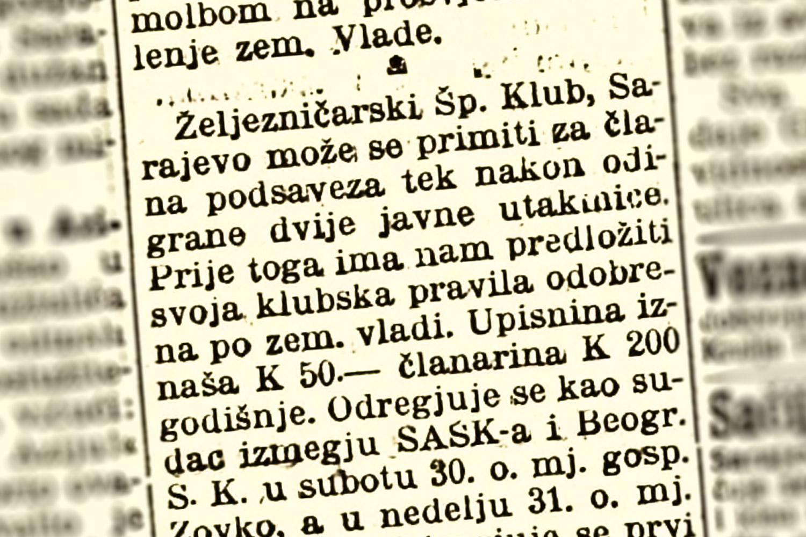
Grupa mladih radnika željezničke radionice osniva klub u jesen 1920. Nakon dvije uslovne utakmice, 19. septembra 1921. klub je zvanično primljen u Sarajevski podsavez.
OSNIVANJEassets/1925-26.jpg
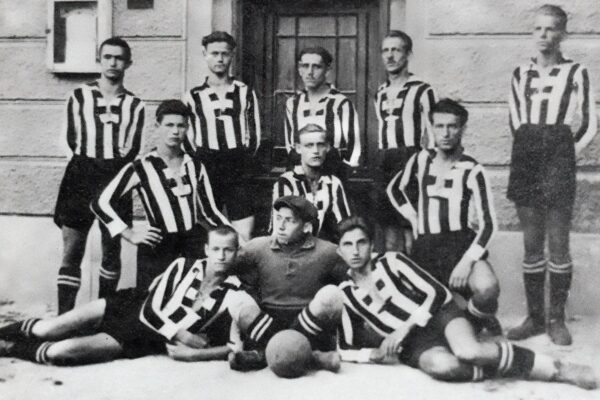
Poslije nekoliko teških početničkih sezona, Željo osvaja prvo mjesto u Drugom razredu Sarajevskog podsaveza i prvi put se plasira u viši rang.
PRVI USPJEHassets/1932.jpg
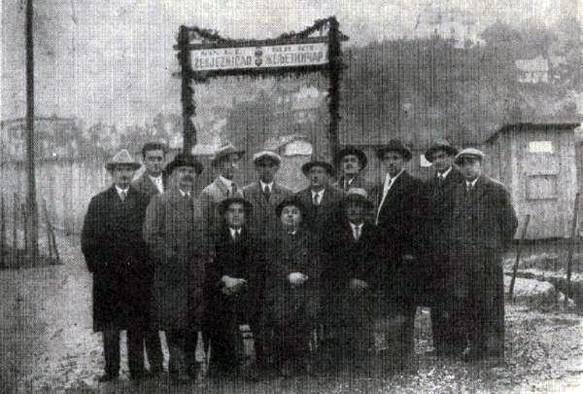
Dobrovoljnim radom igrača i željezničkih radnika izgrađeno je igralište na Pofalićima. Konkurencija ubrzo iskorištava spor oko zemljišta da ga klubu oduzme.
INFRASTRUKTURAassets/1941-1945.jpg
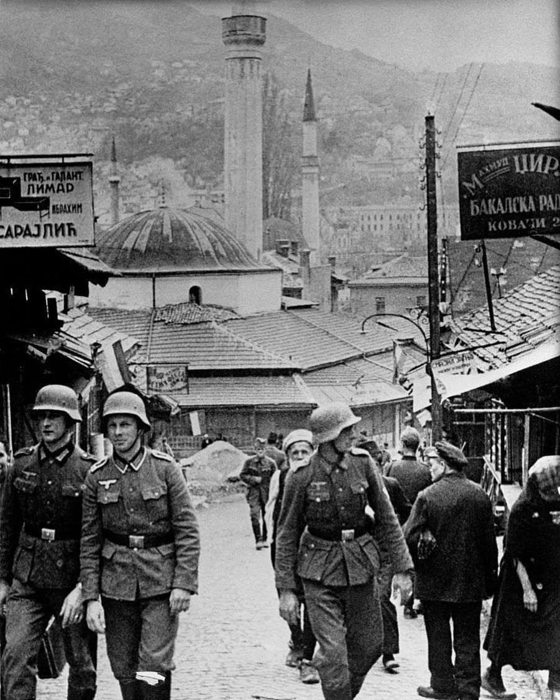
Drugi svjetski rat zaustavlja svaku fudbalsku aktivnost. Mnogi članovi kluba pridružuju se pokretu otpora.
RATassets/1945-46.jpg
Odmah po oslobođenju Sarajeva klub obnavlja rad. Osvajanjem Prvenstva grada Sarajeva i razigravanja s Borcem i Veležom, Željo prvi put ulazi u prvu jugoslavensku ligu — najveći uspjeh kluba do tada.
OBNOVAassets/1949-1953.jpg
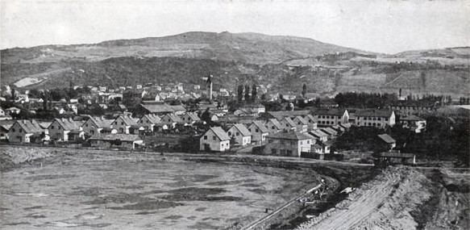
Radnici željeznice, vojnici i građani Sarajeva grade novi stadion na Grbavici, otvoren 1953. — od tada dom kluba.
GRBAVICAassets/1961-62.jpg
Povratak u Prvu saveznu ligu donosi i rađanje generacije koja će obilježiti jugoslavenski fudbal — Osim, Smajlović, Katalinski, Hadžiabdić i drugi.
NOVA GENERACIJAassets/1971-72.jpg
Pod vodstvom Milana Ribara i uz "totalni fudbal", Željo u zadnjem kolu slavi 4:0 protiv Partizana u Beogradu i osvaja titulu prvaka Jugoslavije — najveći uspjeh u historiji kluba.
VRHUNACassets/1980-81.jpg
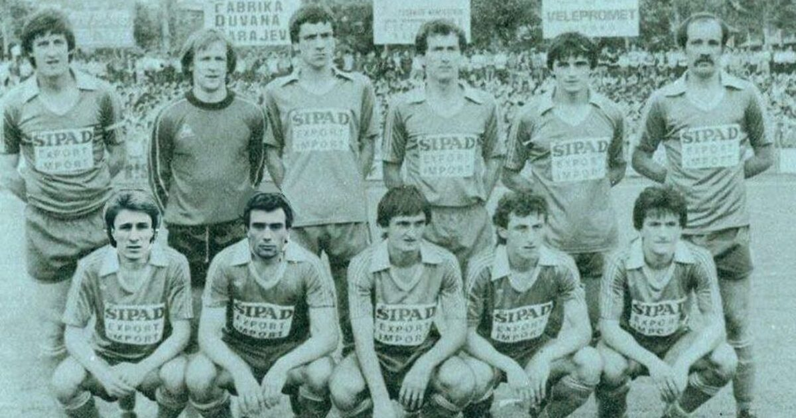
Željo prvi put stiže do finala jugoslavenskog kupa. 24. maja 1981. u Beogradu poražen je 2:3 od Veleža — drugi najveći uspjeh kluba.
FINALEassets/1984-85.jpg
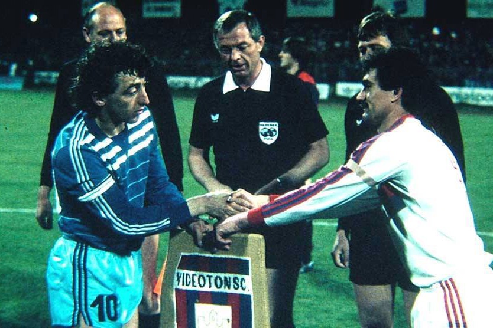
Pod vodstvom Ivice Osima, Željo izbacuje Sliven, Sion, Craiovu i Dinamo Minsk i stiže do polufinala UEFA kupa, gdje ga zaustavlja Videoton — i danas najbolji evropski rezultat bilo kojeg bh. kluba.
EVROPAassets/1991-92.jpg
5. aprila 1992. trebala se igrati utakmica Željezničar – Rad na Grbavici. Nikad nije odigrana — u Sarajevu počinje rat.
RATassets/1992-1995.jpg
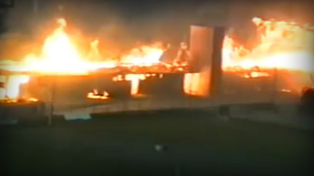
Stadion Grbavica je gotovo u potpunosti izgorio, klub na ivici gašenja. Igrači, sada pripadnici Armije BiH, održavaju klub na životu igrajući mali fudbal između odlazaka na front.
OPSTANAKassets/1996.jpg
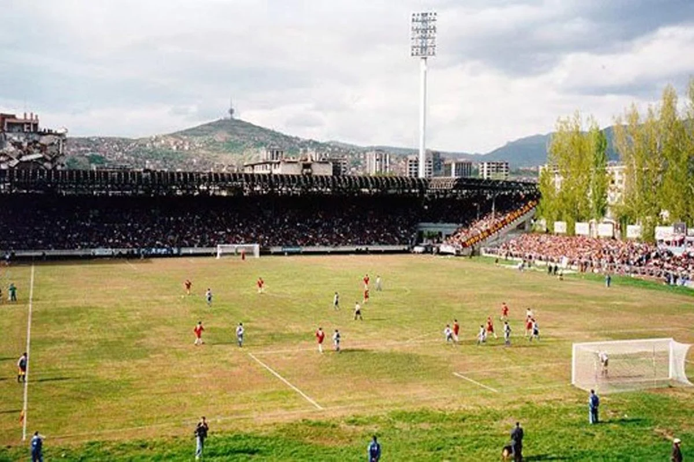
2. maja 1996. na obnovljenoj, ratom uništenoj Grbavici odigran je prvi meč poslije rata — gradski derbi sa Sarajevom, rezultat 1:1.
POVRATAKassets/1997-98.jpg
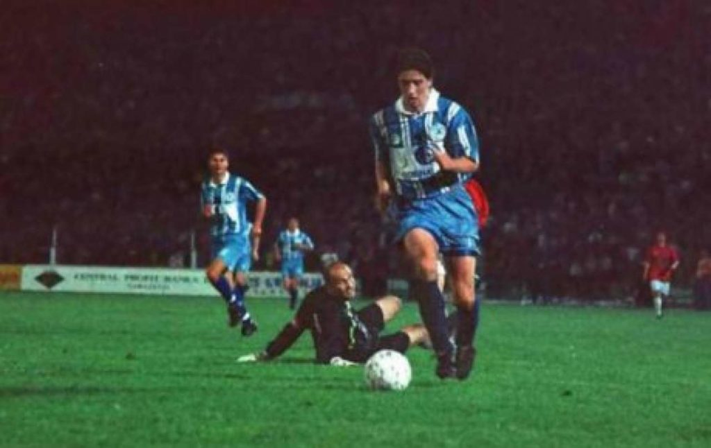
Gol Hadisa Zubanovića na koševu u finalnoj utakmici protiv Sarajeva, 5. juna, donosi Želji prvu titulu prvaka samostalne Bosne i Hercegovine.
ZUBAN DANassets/1998.jpg
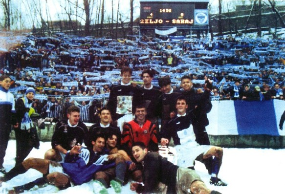
Na zasnježenoj Grbavici Željo slavi 4:0 protiv Sarajeva i osvaja prvi Superkup Bosne i Hercegovine.
SUPERKUPassets/1999-2000.jpg
Igrajući obje završnice — lige i kupa, Željo osvaja svoj prvi Kup Bosne i Hercegovine, dok titula izmiče za dlaku.
KUP #1assets/2000-01.jpg
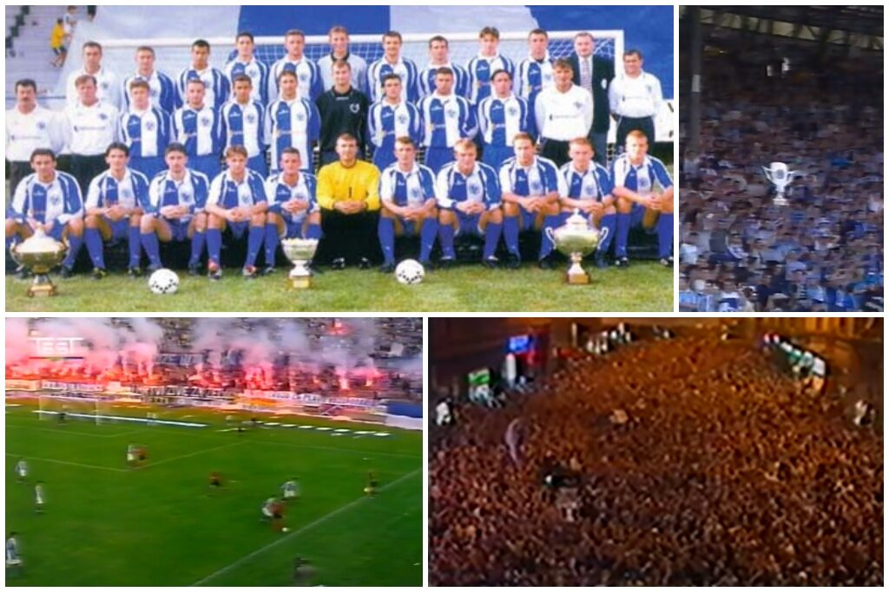
Pod Amarom Osimom Željo osvaja titulu, Kup BiH (3:2 protiv Sarajeva u finalu) i Superkup — prva dupla kruna u klupskoj historiji.
DUPLA KRUNAassets/2001-02.jpg
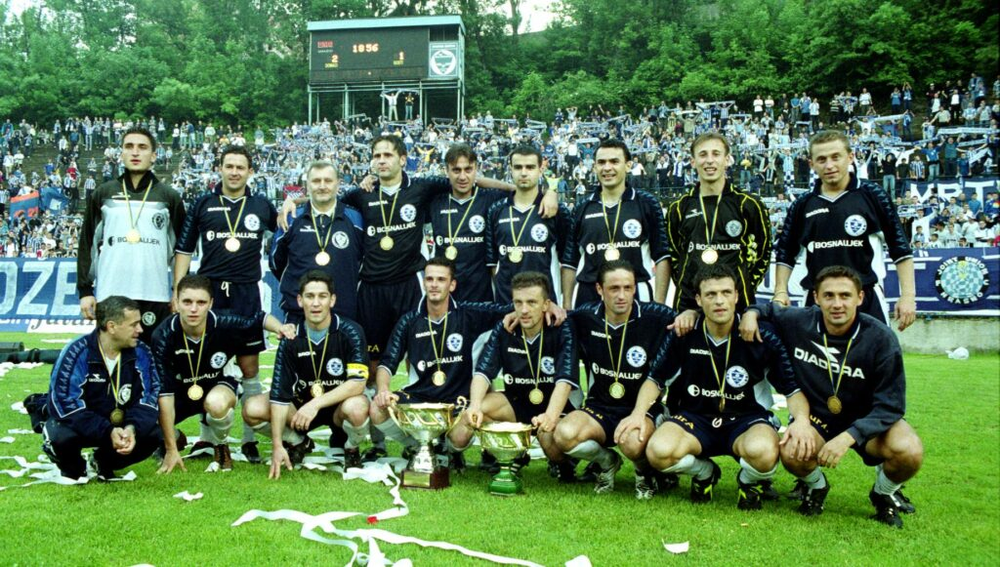
Željo brani naslov prvaka sa čak 11 bodova prednosti nad drugoplasiranim Širokim Brijegom te prvi put od 1972. igra kvalifikacije za Ligu prvaka.
TITULAassets/2002-03.jpg
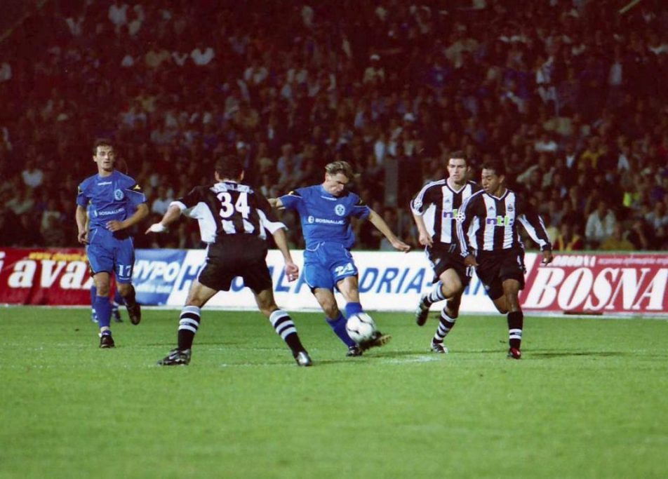
U trećem pretkolu Lige prvaka Željo ispada od Newcastle Uniteda (0:1, 4:0) — najbolji poslijeratni evropski rezultat kluba. Iste sezone osvojen i treći Kup BiH.
EVROPAassets/2003-2009.jpg
Šest sezona bez titule, uz česte smjene trenera, finansijske probleme i plasmane u donjem dijelu tabele. Najveći domet perioda: polufinale Kupa BiH.
KRIZAassets/2009-10.jpg
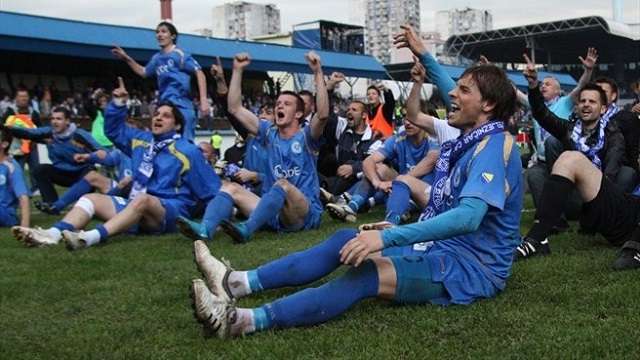
Povratkom Amara Osima na klupu Želje, poslije sedam godina suše Željo ponovo osvaja titulu prvaka BiH.
PREPORODassets/2010-11.jpg
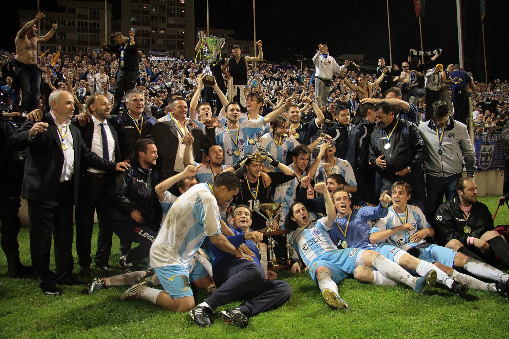
Željo ubjedljivo osvaja Kup BiH — 4:0 u dvomeču protiv Čelika, uz upečatljivih 0:3 u gostima u Zenici.
KUPassets/2011-12.jpg
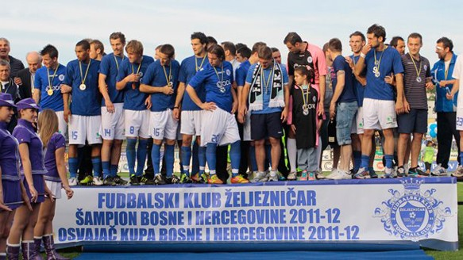
35 utakmica bez poraza i niz od 12 uzastopnih pobjeda. Željo osvaja i ligu i Kup BiH, u finalu protiv Širokog Brijega.
DUPLA KRUNAassets/2012-13.jpg
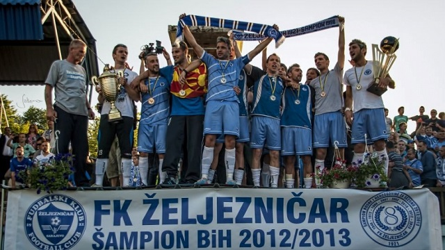
Posljednja titula prvaka Bosne i Hercegovine do danas — sezona okončana 26. maja 2013.
ZADNJA TITULAassets/2017-18.jpg
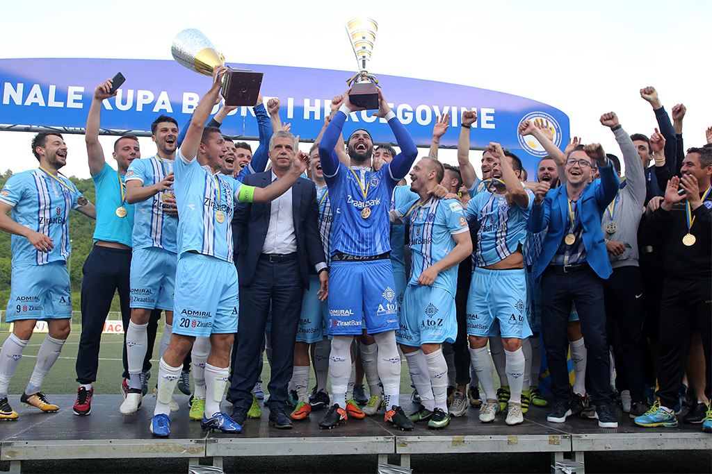
Zadnji osvojeni trofej kluba do danas — peti Kup Bosne i Hercegovine u klupskoj vitrini.
ZADNJI TROFEJ